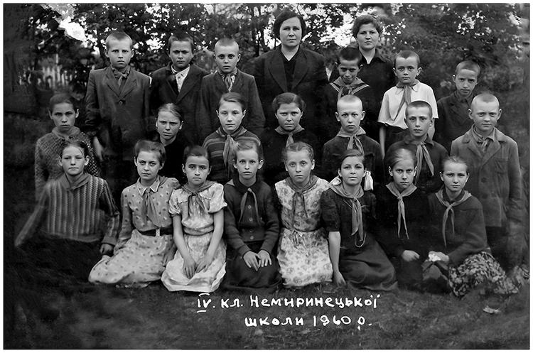

Photo Restoration of Damaged Photo
The goal of this project was to repair the damage done to an older photo, as well as to enhance the overall quality of the photo and the faces of those in it while retaining its original details. The damages needing repaired included tears, scratches, stains, and creases.

Before
After
Project Process
- Made copy of photo to work on so to maintain the original.
- Used spot healing tool to remove the creases, tears, scratches and discoloration.
- Used photo restoration neural filter to remove scratches.
- Used photo restoration neural filter to generate parts of clothing and other objects blurred or missing.
- Clone stamp tool was used to repair clothing on some of the subjects.
- Using curves and levels adjustment layers to increase the tonal range and even out the contrast in the photo to enhance details and create depth.
- Photo was kept in black and white color, black and white adjustment layer was used to enhance the color regions and create more detail.
- Sharpened up the image slightly using the sharpen more filter.
- Added small stroke around the borders to give the look of a photograph.
- Create a .png file for the photo for sharing.
Reflection
This project helped me understand how to use non-destructive editing to restore a badly damaged photo while keeping most of the original details. It also helped me get a better uderstanding of using neural filters while maintaining the time period aesthetic.